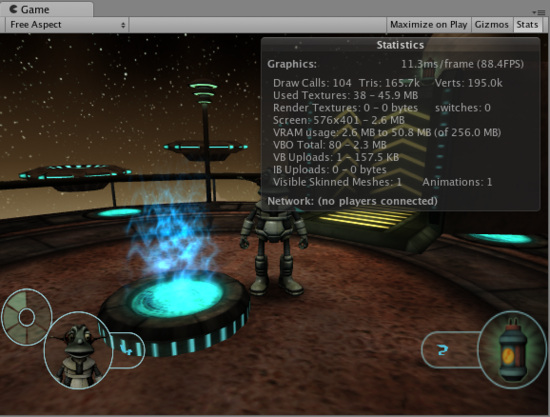

Rendering Statistics Window
The has a button top right. When this Stats button is pressed, an overlay window is displayed with realtime rendering statistics. This is very useful for Optimizing Graphics Performance. Additionally, Profiler shows some rendering statistics.

Rendering Statistics Window
Statistics window contains the following information:
| Time per frame and FPS | How much time it takes to process and render one game frame (and resulting FPS). Note that this number only includes frame update and rendering of the game view; and does not include time taken in the editor to draw the scene view, inspector and other editor-only processing. |
| Draw Calls | How many objects are drawn in total. This accumulates objects that are drawn multiple times as well, for example some object that is affected by pixel lights will add several draw calls. |
| Tris and Verts | Number of triangles and vertices drawn. This is mostly important when optimizing for low-end hardware |
| Used Textures | Count and memory size of textures used when drawing this frame. |
| Render Textures | Count and memory size of Render Textures that are created. Also displays how many times active Render Texture was switched during this frame. |
| Screen | Size, anti-aliasing level and memory taken by the screen itself. |
| VRAM usage | Approximate bounds of current video memory (VRAM) usage. Also shows how much video memory your graphics card has. |
| VBO total | Number of unique meshes (vertex buffers) that are uploaded to the graphics card. Each different model will cause new VBO to be created. In some cases scaled objects will cause additional VBOs to be created. |
| VB uploads | Count and size of vertex data changed this frame. Dynamic geometry, like particles or skinned meshes, will contribute to this, as well as terrain LOD changing, etc. |
| IB uploads | Count and size of triangle data changed this frame. Dynamic geometry, like particles or skinned meshes, will contribute to this, as well as terrain LOD changing, etc. |
| Visible Skinned Meshes | How many skinned meshes are rendered. |
| Animations | How many animations are playing. |